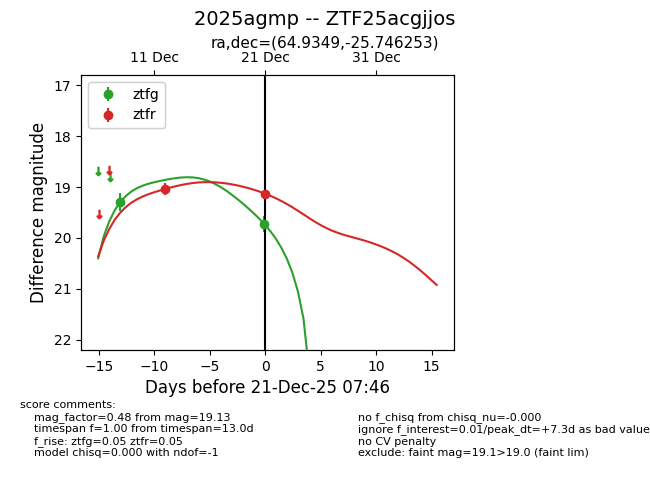
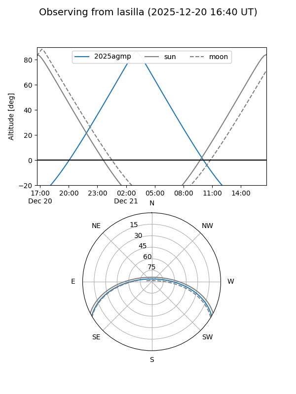
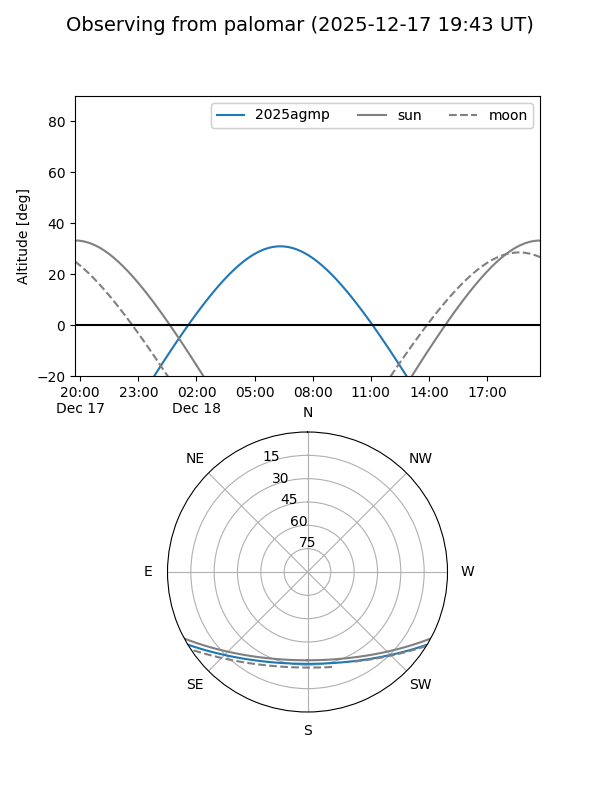
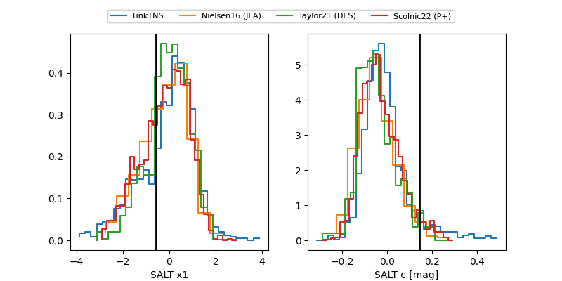

2025agmp
Target 2025agmp at 2025-12-31 18:00
Aliases and brokers:
FINK: link
Lasair: link
ALeRCE: link
TNS: link
YSE: link
alt names
ZTF25acgjjos (ztf,fink_ztf)
2025agmp (tns,yse)
Coordinates:
equatorial (ra, dec) = 64.9349,-25.74625
equatorial (HMS+DMS) = 04:19:44.38,-25:44:46.51
galactic (l, b) = (223.6249,-43.69168)
Flags:
Photometry:
last ztfg=19.72, ztfr=19.13
2 ztfg, 3 ztfr detections
Lightcurve

Visibility


Additional plots
